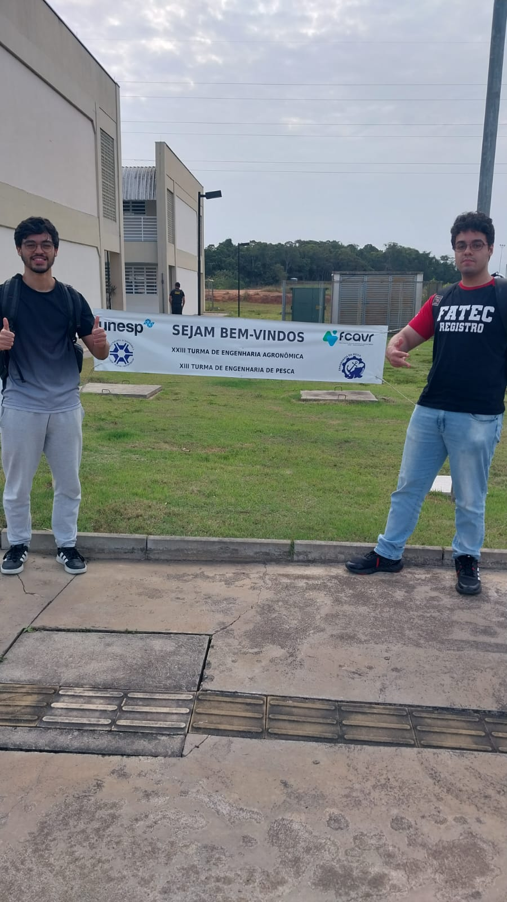
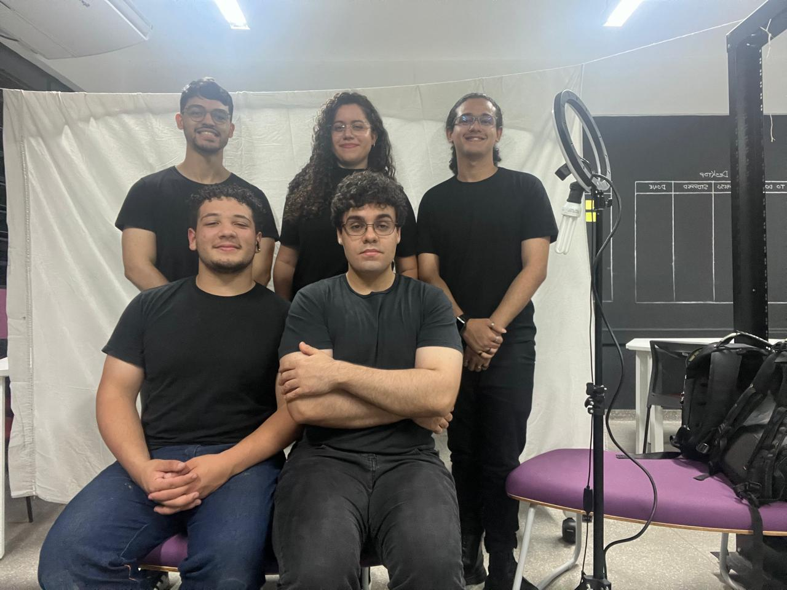
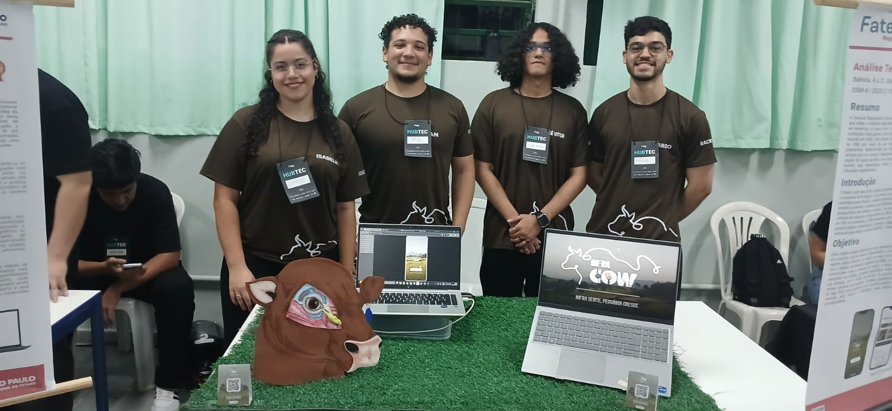
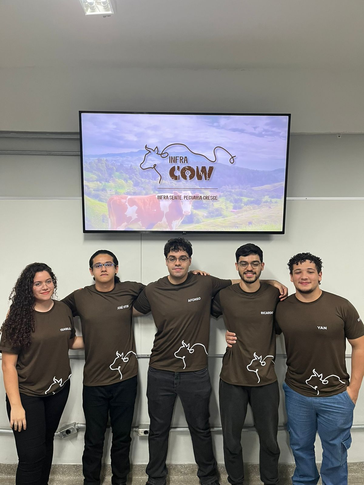
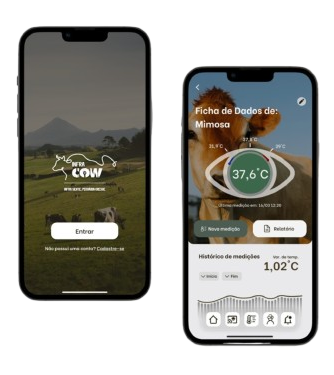
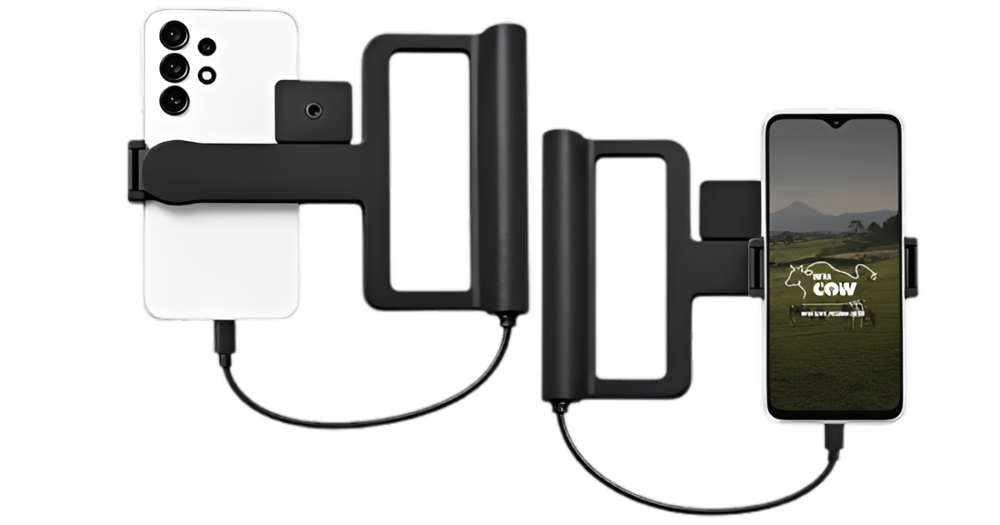
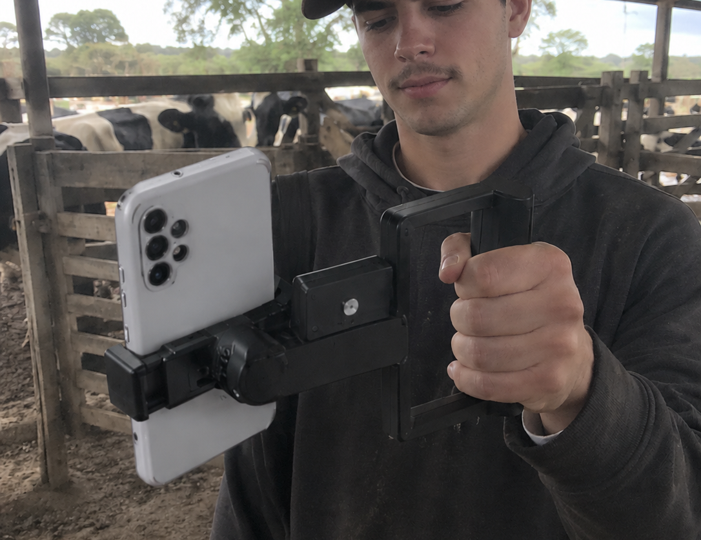
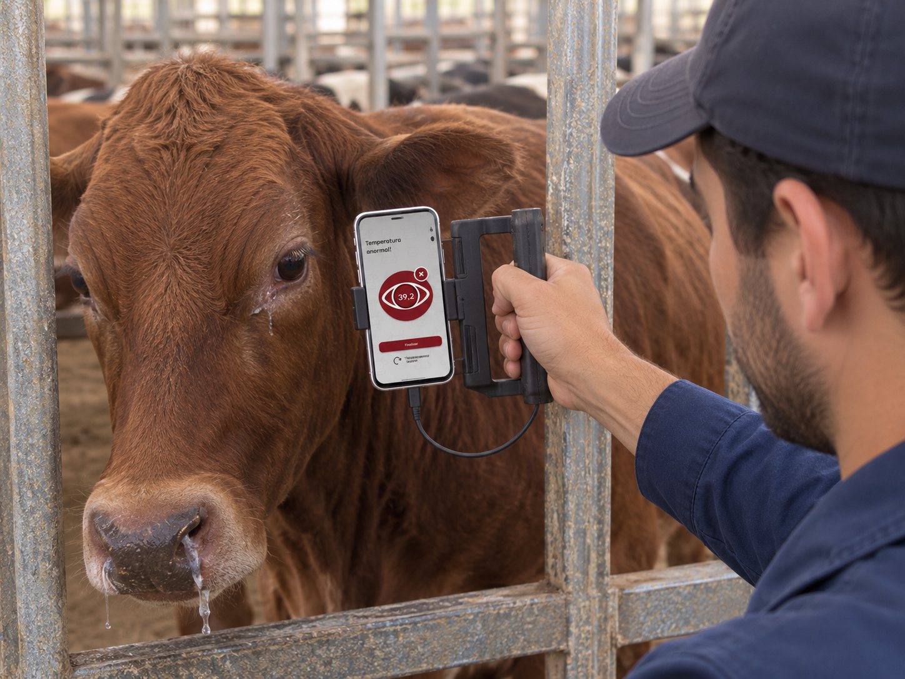
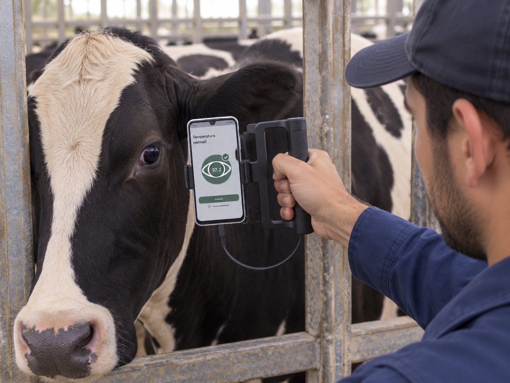

Sobre Nós
Somos a equipe TWtechnologies, um grupo composto por cinco estudantes da FATEC de Registro, no curso de Desenvolvimento de Software Multiplataforma, e estamos unidos pelo desafio de um projeto acadêmico.
Nossa equipe foi formada com o objetivo de explorar, desenvolver e implementar soluções eficazes e criativas que possam fazer a diferença na vida das pessoas.
Nossa missão é desenvolver projetos inovadores que resolvam problemas reais, aplicando o conhecimento acadêmico de forma prática e colaborativa. Visamos criar soluções que não apenas cumpram os requisitos acadêmicos, mas que também tenham potencial para transformar positivamente a sociedade.
Equipe
Nossos Momentos
Construímos soluções em equipe.




Projeto
InfraCow combina o sensor infravermelho MLX90614 com ESP32, aplicativo React Native e API Node.js/PostgreSQL para registrar temperaturas bovinas no rebanho. A medição sem contato é feita no saco lacrimal esquerdo. Prevê-se envio por cabo; o app associa animal, data e hora, armazena offline e sincroniza com a API quando conectado. A identificação pode ser manual ou por RFID, se disponível. A integração física sensor-app está pendente; testes computacionais usaram dados simulados.
Em campo, 20 bovinos de duas propriedades tiveram três leituras comparadas à referência de contato na mesma região. O MAE foi 0,24 °C, o viés 0,00 °C e o RMSE cerca de 0,27 °C; 80% ficaram em ±0,3 °C e 100% em ±0,5 °C. Na análise exploratória de febre (retal ≥ 40,0 °C; ocular ≥ 36,3 °C), sensibilidade e VPP foram 66,7%, especificidade e VPN 94,1%, e acurácia 90,0%. Com apenas três animais febris, os resultados são preliminares: não diagnosticam DRB nem substituem avaliação veterinária.
Objetivos específicos:
- Desenvolver a plataforma e o fluxo de coleta, armazenamento offline e sincronização.
- Avaliar a concordância térmica e estimar exploratoriamente a classificação de febre, sem tratá-la como diagnóstico de DRB.




